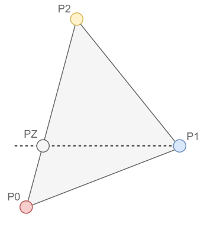

Rasterization
In the Rasterization Stage, the main goal is the convertion of primitives to an image of pixels. There are multiple ways to approximate a shape and translate it to an realistic pixel image. Here we are discussing the procedure of the scanline algorithm. This algorithm is used to rasterize triangles. It*s an fast and simple algorithm.Scanline Algorithm
The first step is to order the points according to the z value of the points. The next differentiation is to see if the point P1 is on the left or right side in comparison of a line, drawn from point P0 to P2. In the following visualization is an example of such an differentiation.

The algorithm can then be divided into two parts. The first
part the triangle spanned by P0, P1 and PZ and the second part is the triangle P1, P2 and PZ. Where PZ lies on the line between P0 and P2 and has the same y value as P1.
These smaller triangles can be devided into segments. A segment is a "line" of pixels with the same y value, a scanline. To calculate the start and end of the scanlines, the
points are interpolated, for example of the lower triangle, if you take a fixed y value, then you can calculate both x values on the lines from P0 to P1 and P0 to PZ. Each
scanline has then a start and end value and a fixed y value. To rasterize the triangle a simple for loop over all relevant y values are made and on each step the scanline is calculated and then
drawn onto the canvas. The same procedure is made on the top triangle. To minimize calculations, the delta of x for each line is calculated, so only an addition is made in each loop.
To calculate the colors of the pixels, the colors are interpolated between P0 to P1 and P0 to PZ. Then each scanline has two colors for each x value and can interpolate these two colors
inside the scanline with a simple lerp of the colors.